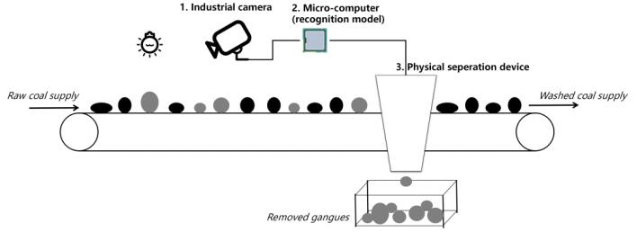
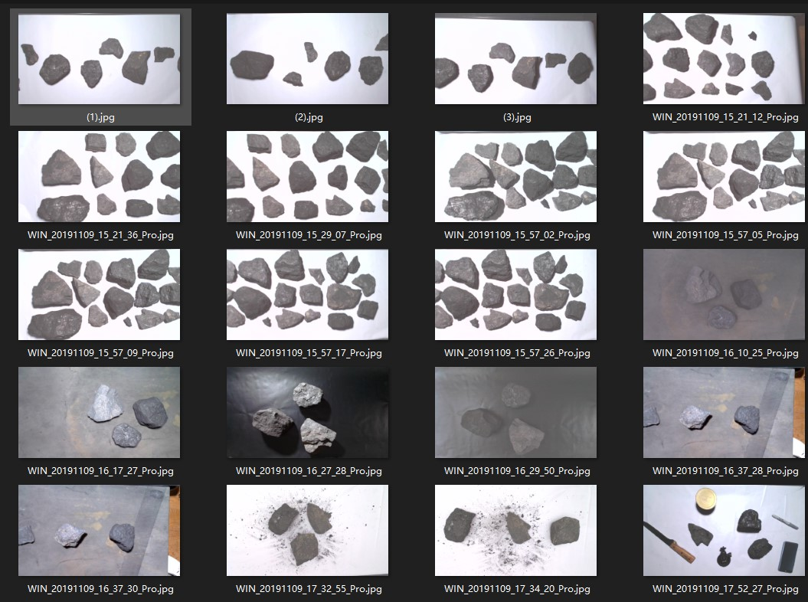
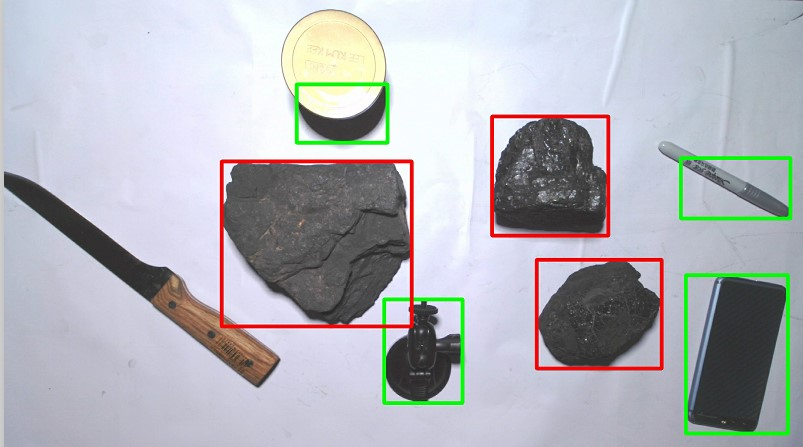
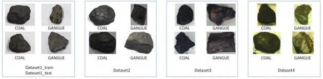
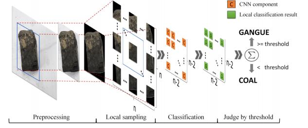

An Autonomous Planning Robot Grasping System face for coal and coal gangue sorting09/2019 – 09/2020
Part-time Research Assistant
Supervisor: Haiyuan Li
In this project, I am the team leader and mainly focus on the classification problem of coal and gangue based on computer vision.
I am also the first writer of the paper for this work which is under review as a Submission for RA-L and ICRA for the IEEE Robotics and Automation Letters(RA-L).
While advertising the sorting factory of coal and gangue, we found that the sorting is still done by human hands. However, the working environment has unavoidable dust and pollution which will damage the workers' health. So the sorting system is in need. As we know, the coal and gangue are already broken into pieces and transported by a conveyor belt. Our work is based on this conveyor belt, designed physical separation devices to sort these two types of rocks.

We build a simulation scene by using a robot hand as this sorting device. This hand is run by 4 motors and has two fingures. We choose small pieces of rocks for demonstrations.
Click the following picture to play the demonstration video.
Affected by the Corona Virus, we can not go to the factory to research for a more efficient and suitable system. This work will be implemented by the successors. So we pay our attention to the classification problem of coal and gangue.
We have built a big dataset which contains many different scenes that might happen in the industry. The following picture shows several situations, including overlap, shadow (which has a strong effect on the reconition of coal and gangue), rubber track background, black background, strong point light, clutters and dust.

Inspired by the face recognition algorithm like MTCNN, we designed a two layer network. The first net is small and shallow, which can classify the clutters and rocks. Here is its result.

The second network is much more complex, which can classify coal and gangue. In our research, we examined several baseline methods and found that the accuracy of classification of these rocks is strongly affected by light conditions. Even though there are some algorithms like gray entropy that can analyse its texture, these algorithms will still be affected by the resolution ratio and dust.
Before we research the new methods, we first build several different datasets. As we showed below, we collect new data under different light strength, different light colors, and different resolutions.

We came up with new methods to solve this problem which is also inspired by human face recognition algorithms. The human face algorithm focuses on several important parts in human face like iris and mouth. However, the rocks also have its characters, which are its texture. To identify these repeat characters, we divided a picture of coal and gangue into several smaller pieces and classified these smaller pictures through a well designed convolution network individually.

The method we proposed has accuracy of 89.2% in total four dataset. You can read more detail data comparasion of our mathods and baseline methods in the paper.